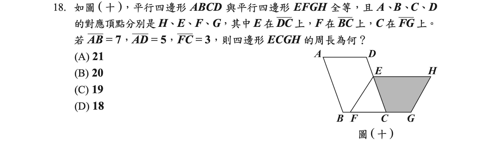

等級加標示與答對題數對照表
等級加標示與加權分數對照表
等級加標示與答對題數對照表

各科等級加標示人數百分比統計表

試題疑義
第一部分:選擇題 (1 ~ 25 題)
通過率 0.88
答案
(A)
詳解
\(\frac{3}{7}- (-\frac{1}{4})=\frac{3}{7}+\frac{1}{4}=\frac{12}{28}+\frac{7}{28}=\frac{19}{28}\)
通過率 0.90
答案
(A)
詳解
通過率 0.77
答案
(C)
詳解
\(\begin{cases} 5x - 3y &= 28 \quad \text{------ (1)}\\ \phantom{5x + \ } y &= -3x \quad \text{--- (2)} \end{cases}\)(2)代入(1)得: \(5x - 3(-3x) = 28\)
\(\Rightarrow 5x + 9x = 28\)
\(\Rightarrow 14x = 28\)
\(\Rightarrow x = 2\)
將 \((x=2)\) 代入(2)得:
\(y = -3(2) = -6\)
\(a+b=2-6=-4\)
通過率 0.84
答案
(D)
詳解
觀察此四點：\((5,3), (-4,-4), (-3,4), (3,-5)\)
可發現 \(x\) 最小值為 \(-4\)，最大值為 \(5\)：
\(\Rightarrow x\) 軸原點左邊長度至少 \(4\)，右邊長度至少 \(5\)
\(y\) 最小值為 \(-5\)，最大值至少 \(4\)：
\(\Rightarrow y\) 軸原點下方長度至少 \(5\)，上方長度至少 \(4\)
故選項 (D) 正確。
通過率 0.82
答案
(B)
詳解
第一層共 9 張，每一層比前一層多 6 張，成等差數列
首項 \(a_1=9\)，公差 \(d=6\)
\(S_{10} = \frac{[2a_1+(10-1)d]\times 10}{2}= \frac{(18 + 54)\times 10}{2}= 360\)
通過率 0.74
答案
(D)
詳解
箱內剩 \(50+10-4＝56\) 顆球
紅球剩 \(10-4＝6\) 顆
抽出紅球機率為 \(\frac{6}{56}＝\frac{3}{28}\)
通過率 0.71
答案
(D)
詳解
通過率 0.68
答案
(C)
詳解
\(c=6.3\times 10^{-6}=0.63\times 10^{-5}\)
\(a=3.2\times 10^{-5}\)
\(b=7.5\times 10^{-5}\)
故 \(c<a<b\)
通過率 0.78
答案
(C)
詳解
甲正確
乙應為大腸癌
通過率 0.65
答案
(C)
詳解
\(5\times (5x-2)-4(5x-2)^2\)
\(=(5x-2)[5x-4(5x-2)]\)
\(=(5x-2)[5x-20x+8]\)
\(=(5x-2)(-15x+8)\)
通過率 0.62
答案
(A)
詳解
\(\frac{9}{4-\sqrt7}=\frac{9(4+\sqrt7)}{(4-\sqrt7)(4+\sqrt7)}=\frac{9(4+\sqrt7)}{16-7}=\frac{9(4+\sqrt7)}{9}=4+\sqrt7\)
\(a=4, b=1\)
\(\therefore a+b=5\)
通過率 0.70
答案
>(C)
詳解
甲：\(y=(x+20)^2+60\geq 60 \Rightarrow x=-20\) 時有最小值 \(y=60\)
乙：\(y=-(x-30)^2+60\leq 60 \Rightarrow x=30\) 時有最大值 \(y=60\)
通過率 0.66
答案
(B)
詳解
\(1920:1080=1600:900\)
通過率 0.55
答案
(C)
詳解
汽車每日碳排放量：\(0.17\times 20=3.4\) 公斤
公車每日碳排放量：\(0.04\times 20=0.8\) 公斤
設改搭公車 \(x\) 天
\((3.4-0.8)x>800\)
\(\Rightarrow2.6x>800\)
\(\Rightarrow x>307.69\)
故至少要改搭公車 308 天
通過率 0.55
答案
(B)
詳解
\(\frac{10}{a}=\frac{2\times 5}{a}\) 為最簡分數 \(\Rightarrow a\) 不能為 \(2\) 或 \(5\) 的倍數
\(\frac{18}{b}=\frac{2\times 3^2}{b}\) 為最簡分數 \(\Rightarrow b\) 不能為 \(2\) 或 \(3\) 的倍數
\(\frac{10}{a}=\frac{50}{a\times 5}\)
\(\frac{18}{b}=\frac{54}{b\times 3}\)
\(\Rightarrow a\times 5=b\times 3\)
\(\Rightarrow a\) 為 \(3\) 的倍數，\(b\) 為 \(5\) 的倍數
通過率 0.52
答案
(B)
詳解
\(14.88+x\div 10\times 0.08=14.88+0.008x\)
通過率 0.50
答案
(A)
詳解


通過率 0.43
答案
(A)
詳解

通過率 0.52
答案
(B)
詳解
\(P\) 在 \(A\) 左側 \(\Rightarrow p<-2\)
設 \(p=-3\), \(q=-\frac13\)
\(\Rightarrow Q\) 在 \(\overline{AO}\) 上，\(\overline{AQ}>\overline{QO}\)
通過率 0.54
答案
(D)
詳解
\(\angle1+\angle2=180^\circ-\angle{EGF}=\angle3+\angle4\)
四邊形 \(GECD\) 中：
\(\angle1+\angle4=360^\circ-105^\circ-70^\circ-\angle{EGF}=185^\circ-\angle{EGF}\)
四邊形 \(ABFG\) 中：
\(\angle2+\angle3=360^\circ-100^\circ-85^\circ-\angle{EGF}=175^\circ-\angle{EGF}\)
\(\Rightarrow \angle1+\angle4>\angle2+\angle3\)
通過率 0.38
答案
(D)
詳解
通過率 0.34
答案
(A)
詳解
\(\triangle ABC\) 面積 \(=5+4+3=12\)
重心與頂點連線將三角形面積三等分
\(\Rightarrow \triangle GBC=\triangle GCA=\frac13\triangle ABC=4=\triangle DBC\)
\(\because \triangle GBC\) 與 \(\triangle DBC\) 共底，\(\therefore\) 高相同
\(\Rightarrow \overline{DG}// \overline{BC}\)
通過率 0.30
答案
(B)
詳解
\(\angle B=\angle DCE\), \(\angle BCE=\angle CED\) (內錯角)
\(\therefore \triangle BCE \sim \triangle CED\) (AA 相似)
\(\overline{BC}:\overline{CE}=\overline{CE}:\overline{ED}\)
\(\Rightarrow \overline{BC}:2=2:4\)
\(\Rightarrow \overline{BC}=1\)
\(\overline{AC}=\overline{AB}-\overline{BC}=4-1=3\)
\(\overline{BC}:\overline{AC}=1:3\)
通過率 0.35
答案
(D)
詳解
設身高為 \(h\) 公分
甲：\(h^2\times 22=(100h-70)\times 0.6\)
\(\Rightarrow 22h^2=60h-42\)
\(\Rightarrow 22h^2-60h+42=0\)
\(\Rightarrow 11h^2-30h+21=0\)
判別式 \(D=30^2-4\times11\times21=900-924=-24<0\) 無解
所以甲錯誤
乙：\((100h-70)\times 0.6=(100h-158)\times 0.5+52\)
\(\Rightarrow 60h-42=50h-79+52\)
\(\Rightarrow 10h=15\)
\(\Rightarrow h=1.5\)（公尺）合理
所以乙正確
通過率 0.33
答案
(B)
詳解
算法 ②：
理想體重 \(=(100\times 1.8-80)\times 0.7=70\)
實際體重介於 \(70\times 90\%=63\) 至 \(70\times 110\%=77\) 之間
算法 ③：
理想體重 \(=(100\times 1.8-170)\times 0.6+62=68\)
實際體重介於 \(\frac{63}{68}\times 100\% \approx 92\%\)(正常)
至 \(\frac{77}{68}\times 100\% \approx 113\%\) (過重)
第二部分:非選擇題 (1 ~ 2 題 )
答案
(1) 水果 ＝ 蛋白質
(2) 否
詳解
(1) 水果＋蔬菜 \(=\frac12=\) 蛋白質＋榖類
\(\because\) 蔬菜 \(=\) 榖類
\(\therefore\) 水果 \(=\) 蛋白質
(2) 水果＋蔬菜佔一半，所以蛋白質的矩形長為 \(16\times \frac12=8\)
\(10a=8b\Rightarrow 5a=4b\Rightarrow a\) 為 \(4\) 的倍數
因為蔬菜比水果多：\(a<8\times \frac12=4\) (矛盾)
所以 \(a\) 不可能為正整數
答案
(1) 30 cm
(2) CD > AB